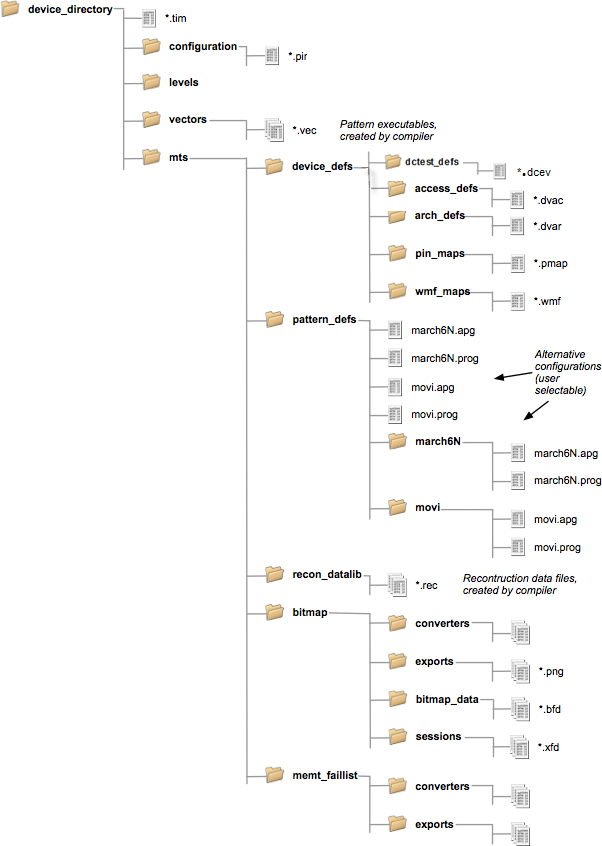

Device directory structure
The following diagram shows the directory structure of the MTP files.

The following table describes the usage of the files.
File type |
File name extension |
Used for |
For more info see |
|---|---|---|---|
vectors pattern executables |
*.vec |
Storage of the binary vector file (output of APG compiler). This file contains the generated APG pattern as a "per-pin subroutine" and is loadable with SmarTest software |
|
device definitions |
*.dvac |
Definition of the different device access modes |
|
|
*.dvar |
Definition of the address scrambling tables, data scrambling tables (bit inversions and/or bit ordering) and layout of the device |
|
|
*.dcev |
Definition for DC tests |
|
|
*.pmap |
Mapping of the generic pin names used in the device access file to the pin names defined in the pin configuration file of SmarTest |
|
|
*.pin |
Pin Configuration File, optional, needed for Automatic Waveform Generation |
|
|
*.wmap |
Mapping of the physical waveforms of a wavetable defined in the timing file of SmarTest to the device |
|
pattern definitions |
*.apg |
Listing the APG data files (device architecture, APG program, and device access) to be used for APG pattern generation. It also contains certain parameter control values required for the APG program file |
|
pattern definitions |
*.prog |
Description of the test algorithm |
|
reconstruction data files |
*.rec |
Storage of binary reconstruction information. |
|
bitmap converters |
*.cpp |
Source code for memory core layout conversions |
|
|
*.so |
Compiled shared library with conversion routines Note that the names of libraries that are intended to be used with Red Hat 5 end with -EL.so. |
|
|
main.cpp |
Program to verify the conversion routines in a loopback condition( file provided by Advantest) |
|
bitmap exports |
*.png |
Saving a list of failed cells and detail views |
|
bitmap_data |
*.bfd |
Storage of address-based fail information |
|
bitmap sessions |
*.xfd |
Storing BFM viewer sessions |